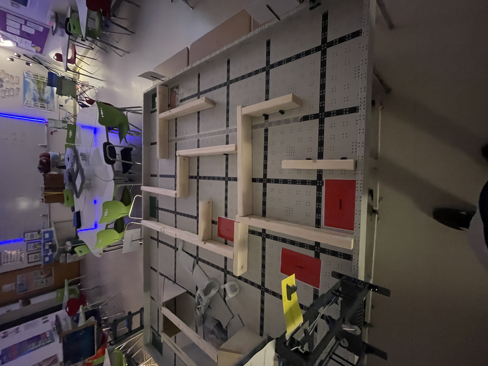
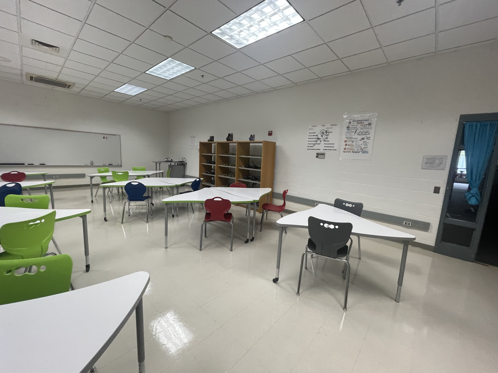
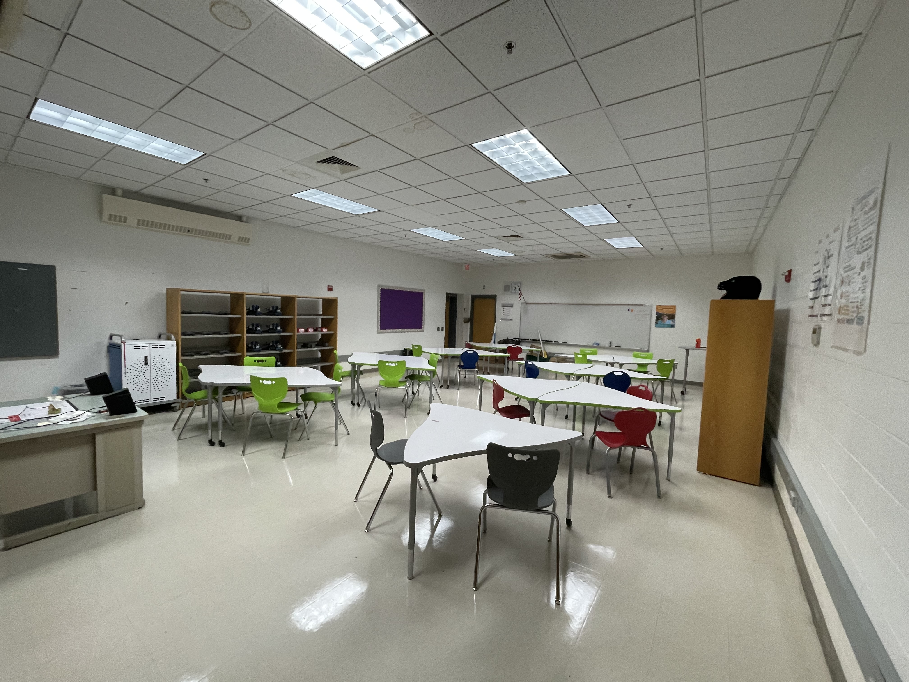
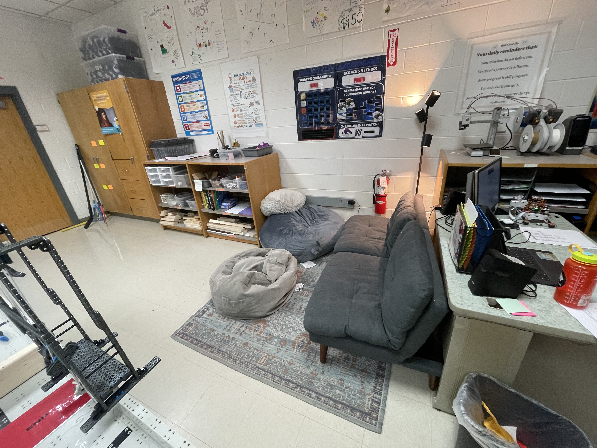
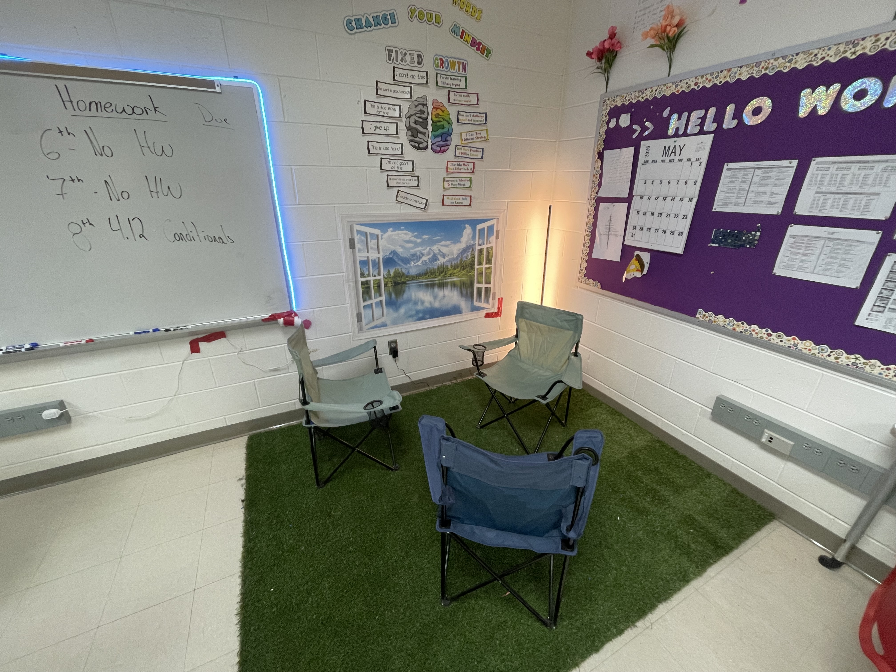
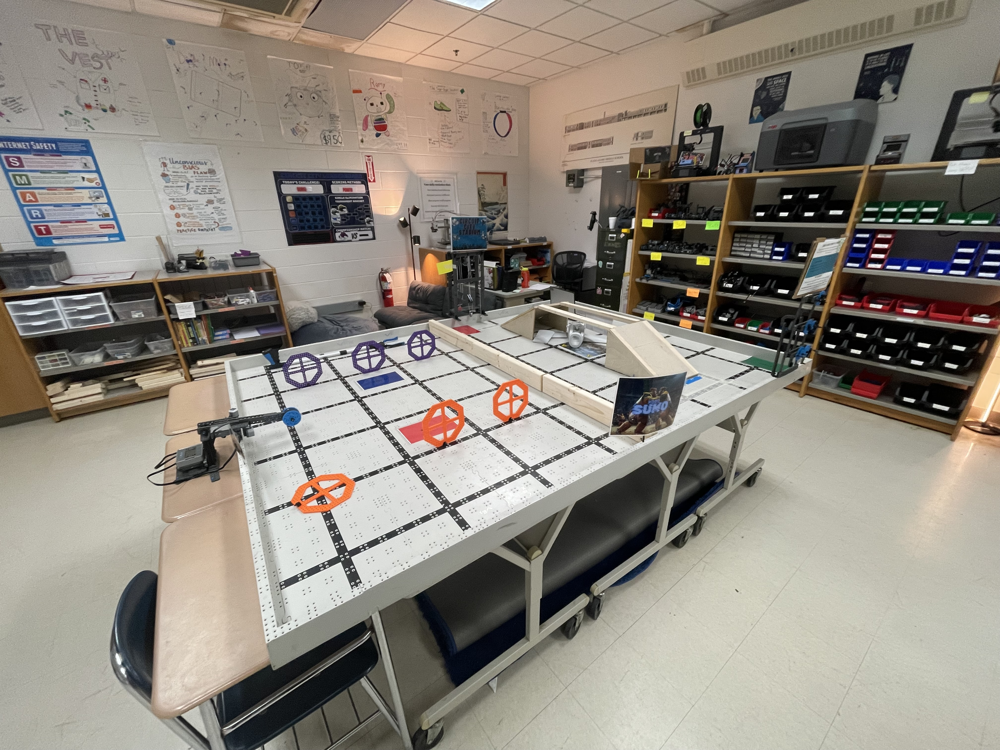
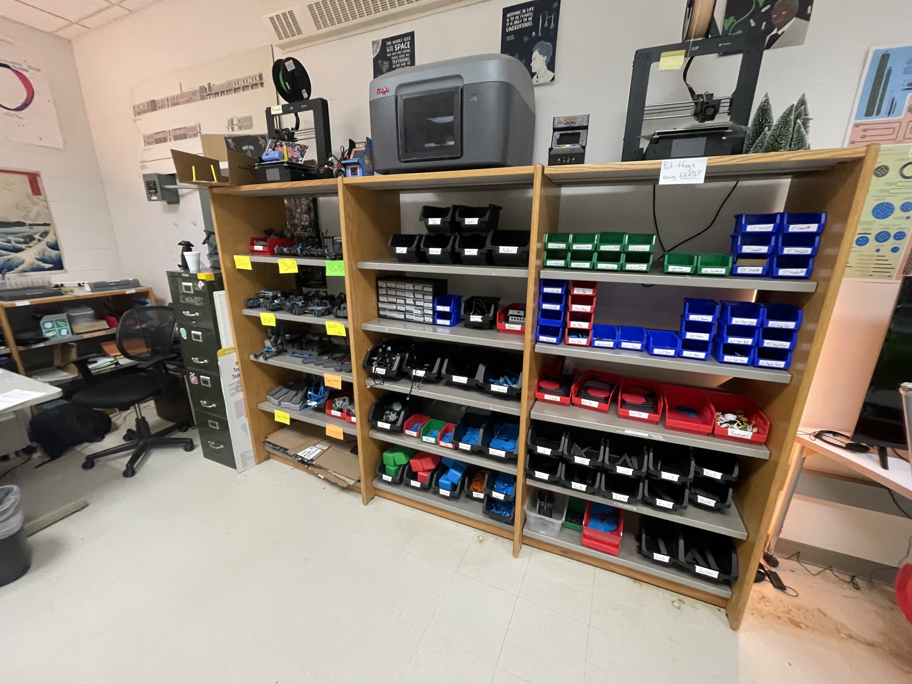
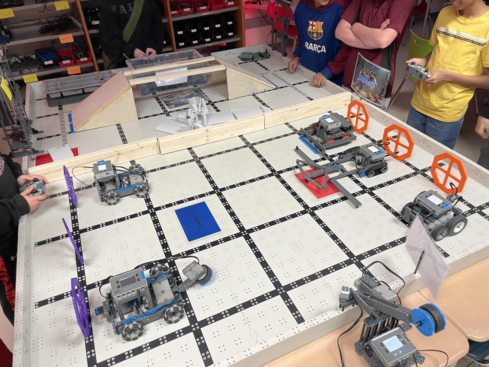

Projects / Classroom Redesign
Classroom Redesign
Redesigned my computer science classroom based on a student survey.

I surveyed my students before changing anything. Three questions about what made the room hard to focus in, hard to work in groups in, and what they would change. The answers were consistent across all sections.
The changes:
- Replaced the fluorescents with warmer, dimmable task lighting.
- Broke the rows into three seating zones: soft seating for reading and discussion, collaborative tables for group projects, individual desks for focused work.
- Built a permanent robotics area with a fixed field, kit storage, and a workbench so projects stay assembled between classes.
Before


After




